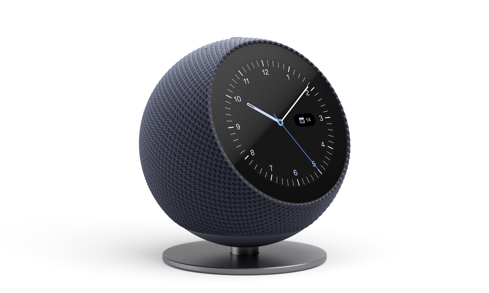
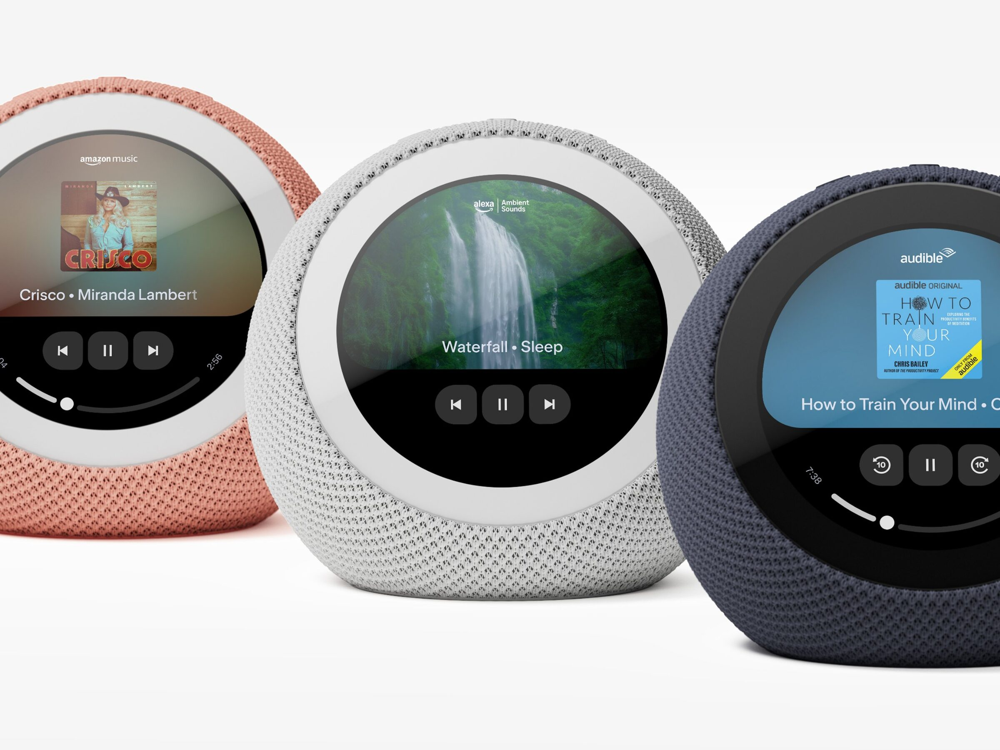
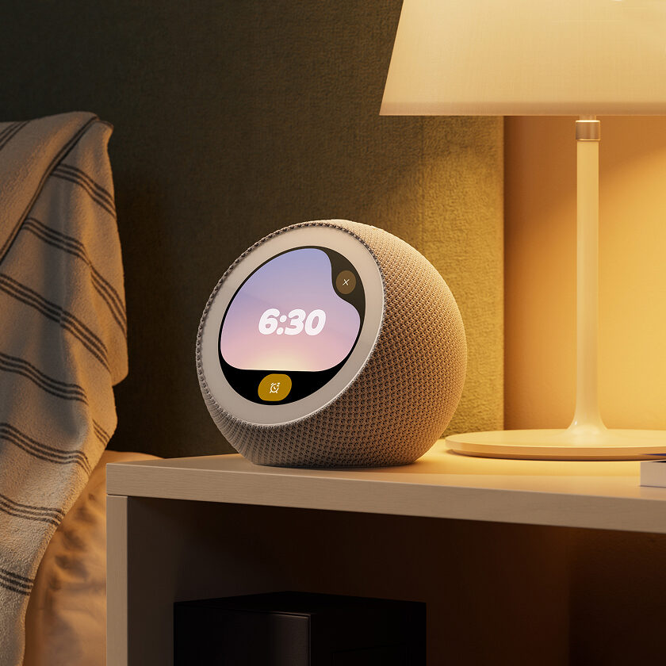
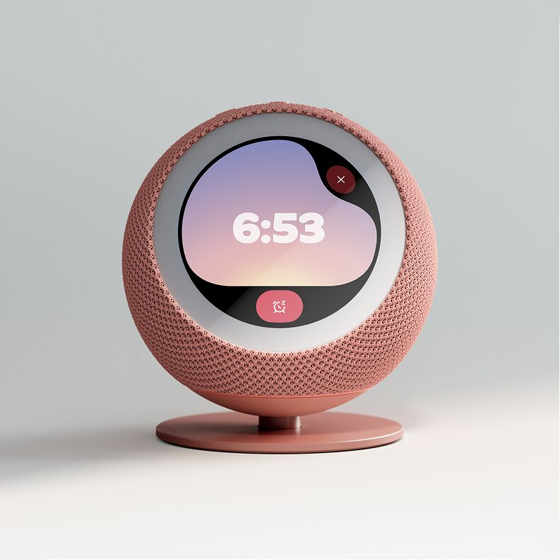
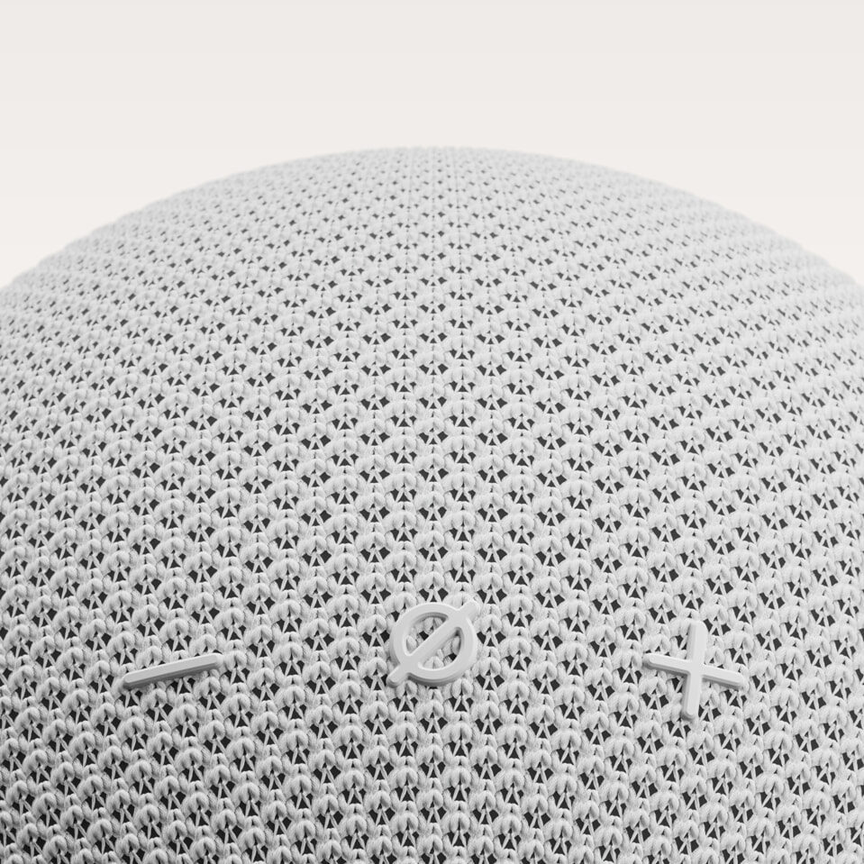
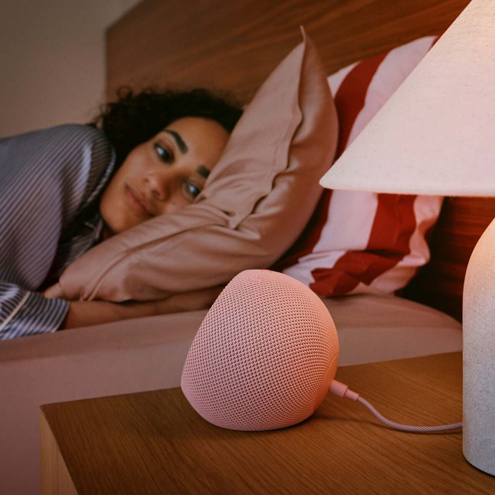

Product · Consumer Electronics
A smart clock for Amazon — a soft, fabric-covered sphere with a round display, made for the bedside.

Echo Time is a sphere wrapped in knit fabric, with a round display set into its face. It sits directly on a nightstand or on a slim metal stand, and comes in a range of colors.



The controls are molded into the fabric itself, appearing as raised symbols on the top of the sphere rather than separate buttons. The knit covers the whole form, so the product reads as a soft object in the room.


Echo Time launched in October 2026.